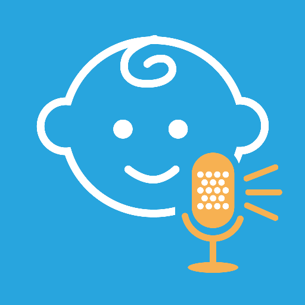
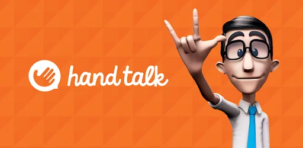
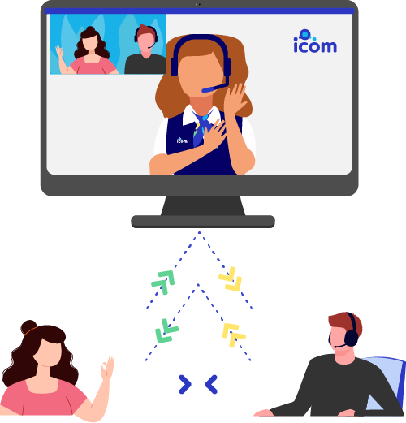

1. COMO A TECNOLOGIA FACILITA A VIDA DO SURDO?
Na sociedade atual, com a evolução da tecnologia, existem várias ferramentas que podem ajudar na comunicação entre ouvintes e surdos. Estes últimos vêm, ao longo do tempo, conquistando seus direitos. Contudo, ainda enfrentam muitas barreiras comunicacionais nos mais diversos setores da sociedade.
A falta de um sentido nas pessoas surdas não as impede de atuar com eficiência em diversas áreas no mercado de trabalho, desde que tenham recebido uma educação adequada à sua condição de “ser visual”. Assim, a Educação de Surdos vem aos poucos obtendo grandes conquistas, como a lei que torna obrigatória a disciplina de Libras nos cursos de Fonoaudiologia e de formação de professores.
Foi ao cursar a disciplina de Libras ofertada pelo curso de Licenciatura em Computação do IF Sertão Pernambucano, que me despertou a curiosidade para aprofundar mais o conhecimento sobre pessoas surdas. Mas o interesse maior partiu da convivência com uma pessoa surda muito próxima e por ser uma área ainda muito carente de profissionais e pouco valorizada.
As tecnologias de informação e comunicação (TIC) potencializam a comunicação e o aprendizado das pessoas surdas, pois possibilitam mais acessibilidade e entendimento mais amplo sobre os assuntos estudados em sala.
2. QUAIS SÃO ESSAS TECNOLOGIAS E EM QUE ÁREAS DA VIDA SÃO USADAS?
- Despertadores que ao invés de tocarem sons altos, vibram para despertá-las na hora programada;
- Aparelhos auditivos;
- Notificações por flashes e luzes ao invés de sons;
- Intérpretes e tradutores de Línguas de Sinais.
Exemplos de Tecnologia Assistiva para Surdos
App ChatterBaby™: Identificar o choro de um bebê já é uma tarefa desafiadora para pais e mães ouvintes, mas pode ser ainda mais desafiador se você possui algum grau de perda auditiva. Pensando nisso, a UCLA desenvolveu uma solução em aplicativo que, através da inteligência artificial, consegue prever com 90% de precisão o motivo do choro de um bebê. Já está disponível para download na Play Store e Apple Store.
Hand Talk: A Hand Talk possui duas soluções de tecnologia assistiva para surdos: um aplicativo que funciona como tradutor de bolso, e um Plugin de Acessibilidade que realiza a tradução dos conteúdos em texto disponíveis nos websites para a Libras.
Primeira Mão: Produzido pela TV INES, do Instituto Nacional de Educação de Surdos, é um aplicativo que transmite informações via um jornal semanal bilíngue em Português e Libras, garantindo que a informação chegue ao público surdo.
Transcrição Instantânea: Disponível em Android, o aplicativo transcreve áudios em mais de 70 idiomas, tornando as conversas cotidianas mais acessíveis para pessoas surdas.
ICOM: O ICOM é uma ferramenta online que conecta surdos e ouvintes a intérpretes em tempo real via videochamada.
AVA: Realiza a transcrição de áudio para texto, permitindo que pessoas surdas acompanhem conversas de forma mais acessível.